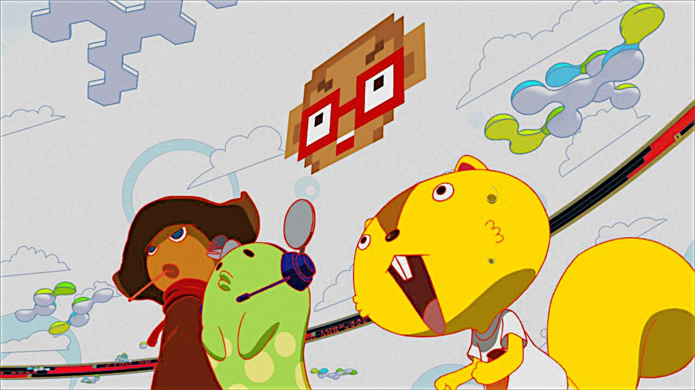
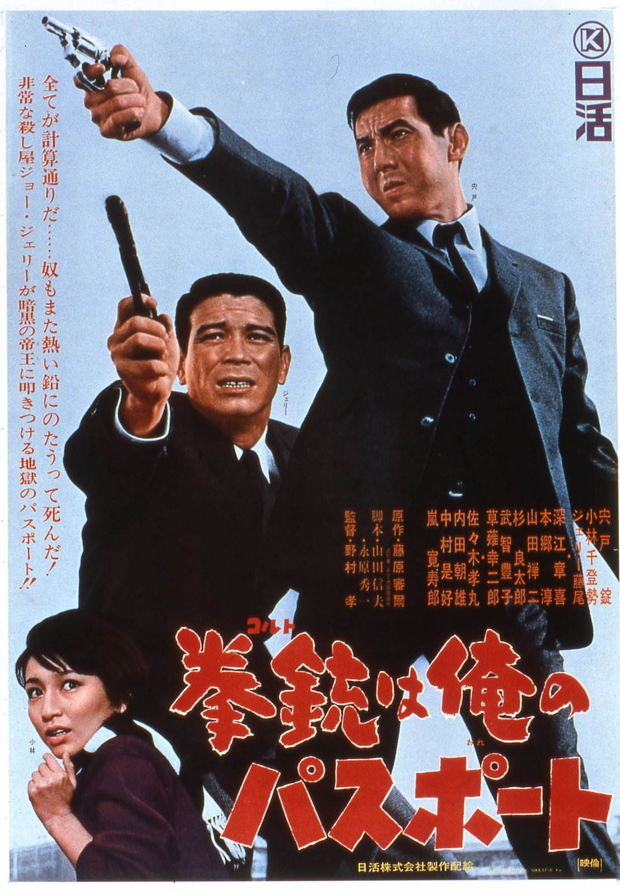
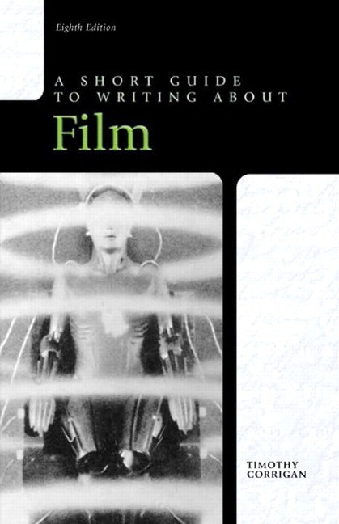
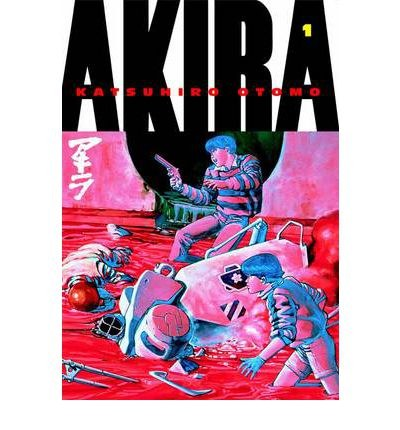

Attendance/participation:
5 points
The part of your grade that makes all others easy is attendance and participation. If you come to screenings, lectures, and discussion sections, you will go a long way towards knowing and understanding the material. Although films will be on reserve at the library, attendance at at least twelve of the film screenings is required for your participation in the course.
Attendance and participation will be assessed through your clicking with your iClicker at screenings, lectures, and discussion sections. Bring your iClicker with you to every class.
You are required to purchase an i>clicker remote for in-class participation. i>clicker is a response system that allows you to respond to questions I pose during class, and you will be graded on that feedback and/or your in-class participation. In order to receive this credit, you will need to register your i>clicker remote online within the first TWO WEEKS of class. You must have come to class at least once and voted on at least one question in order to complete this registration properly. For more on i>clicker and instructions click here.
Pop QUizzes:
5 points
Pop quizzes may be given at anytime throughout the semester on a given week’s readings. Quizzes will be given when only a few students are participating in discussion or when it appears only a few students have completed the reading or screening assignments for the week.
A student’s lowest 1/3 of scores will be dropped before the pop quiz average is derived and entered into your final grade. Since one third of the quizzes may be dropped there will be no make up quizzes for lateness or absentee-ism.
All quizzes will be administered through the iClicker system. Yet another good reason not to ever for get your clicker.
10 Course Material Write-ups
10 points
Students will be required to fill out Course Material Write-Up forms for ten sessions. The write-ups will be due in class on Wednesday.
Students will be expected to complete 10 course material write-ups on primary materials by the end of the semester. The form is available here.
Forms on a given week’s readings should be submitted as a hard copy at the beginning that Wednesday’s class or as digitally via email prior to class on Wednesday. (In other words, students are to have finished the primary reading for the week prior to class on Wednesday.)
The Write-ups are opportunities for you to display what you have garnered from the readings and to influence class discussions. Students who have difficulty speaking in class are particularly encouraged to take this assignment seriously as it will prepare you to be more outspoken in class and show your classmates and instructor that you have important ideas.
Material in the write-ups will be shared with the entire class and students should not consider them confidential work for the eyes of the professor only.
4 Experiments in Media:
20 points
Throughout the semester we will have four assignments in which students will actively apply the knowledge they have learned to various media. Descriptions of each project will be posted to the Docs page.
Para/photograph -- Writing with light and words…
Due January 18, 2013
2. Editing — Choose a Youtube clip and describe....
Due February 1, 2013
3. Theater in a box — In your home vs. in your theater...
Due February 15, 2013
4. Cell/cel/Net — Choose your own experiment....
Due March 1, 2013
Quiz on Japanese/Film Terms:
10 points
FEBRUARY 6th. There will be no make up quizzes given; instead students unable to take the quiz are encouraged to avail themselves of the bonus opportunities provided in the four experiment assignments.
Project/Presentation:
10 points
Groups of 3-5 students will present independent research on a topic related to the film of the week of their presentation. Students must sign up by the third week of class for a group. Groups must obtain approval from their seminar instructor by two weeks prior to their presentation date. Presentations shall take no more than 20 minutes total. See group presentation description sheet on the Docs page (to be posted).
Take Home Mid-Term:
20 points
5 Identification and significance topics. 10 points each.
1 essays (choose from three). 50 points.
Final PAPER:
20 points
Your final paper will be due in four stages: Thesis, Intro/Outline, Rough Draft, Final. Each stage is worth 5 points.
Thesis
Due January 28, 2013
1-3 sentences submit to Angel Dropbox
Intro paragraph and Outline
Due March 15, 2013
1pg submit to Angel Dropbox
Rough
Due April 1
3-5 pages submit to Angel Dropbox
Final
Due April 29th
3-7 pages submit to Angel Dropbox
Grading

Grade Components
Attendance/participation:
5
Pop QUizzes:
5
10 Course Material Write-ups:
10
4 Experiments in Media:
20
Quiz on Japanese/Film Terms:
10
Project/Presentation:
10
Take Home Mid-Term:
20
Final PAPER:
20
Your Homework
Watch the films. Do the readings. Complete your 10 Write-ups. Complete your 4 experiments. Complete your presentation preparation. Study for the quizzes and exam. Write your final paper.
Required Texts
The iClicker and books are available at the Penn State Bookstore. All other readings will available for download from the course schedule page.
Katsuhiro Otomo, Akira, Vol. 1 (Kodansha Comics, 2009). 1935429000.
Corrigan, Timothy. A Short Guide to Writing About Film. The Short Guide Series. 7th ed. New York: Longman, 2010. 9780205668946 (SGWF)
Yasutaka Tsutsui, The Girl Who Leapt Through Time, trans. David Karashima (Alma Books, 2012).9781846881343
NISIOISIN, Death Note: Another Note (Novel) (VIZ Media LLC, 2008). 9781421518831.
Optional:
Students are encouraged to subscribe to Hulu Plus for the duration of the course. This will give you unfettered access to some classics of Japanese film through the Criterion collection. DVDs are also available through the library.

Are Film Ads and posters part of the Medium?



Do they influence meaning?
Do they contribute to our experience of the film?
How do they differ from film as a medium?

The syllabus is in flux. Check here for most recent updates. Any printout is likely already out of date.
Updated Friday, August 22, 2014




Course Requirements